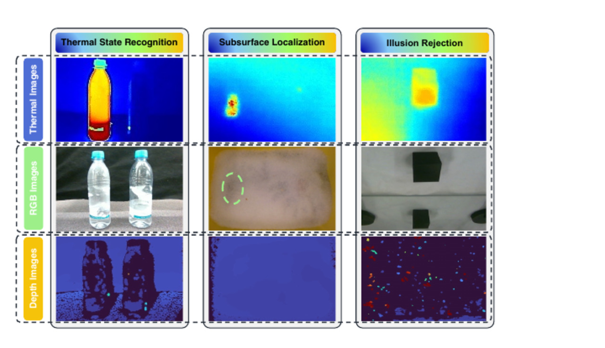

Three synchronized views
RGB carries scene context, thermal pseudo-color exposes LWIR heat signatures, and depth supplies illumination-invariant geometry.
Thermal perception + language action + runtime safety
Safe-Night VLA equips a pre-trained VLA policy with synchronized RGB, LWIR thermal, and depth observations, then constrains execution through a CBF-QP safety filter for thermodynamic and low-light manipulation.
Munich Institute of Robotics and Machine Intelligence, Technical University of Munich
*Equal contribution. †Corresponding author.
This paper has been accepted to the 2026 IEEE/RSJ International Conference on Intelligent Robots and Systems (IROS 2026).
Abstract
Current VLA policies rely heavily on RGB observations, which makes thermodynamic state, buried targets, and optical deception hard to resolve. Safe-Night VLA adds LWIR thermal perception to a frozen vision-language backbone and trains only the action-side components, allowing the policy to ground prompts such as hot, cold, and buried in non-visible physical evidence.
The framework is paired with a runtime control barrier function filter. The VLA still proposes task-driven Cartesian intent, while the CBF-QP layer converts it into safe joint displacements under modeled workspace constraints. The paper evaluates this combination on a Franka robot across temperature-conditioned manipulation, subsurface localization, and reflection disambiguation.
Full Demo
Method
RGB carries scene context, thermal pseudo-color exposes LWIR heat signatures, and depth supplies illumination-invariant geometry.
The visual-language encoder is kept frozen to preserve pre-trained semantic structure while adapting to pseudo-color thermal cues.
The action head learns to translate multimodal tokens and language prompts into 6-DoF end-effector deltas plus gripper commands.
A post-hoc quadratic program enforces joint limits and workspace barriers before robot execution.

Experiments


Scenario I
The robot must pick the hot or cold bottle when the objects are visually similar, including runtime scenes with an unseen heated distractor.

Scenario II
A thermal bloom through granular media guides the policy toward a buried hot object that is almost invisible in RGB.

Scenario III
LWIR attenuation in common glass helps reject mirror reflections that appear plausible in visible light.
Results
Dim/Night + Safety
64%
Hot/cold bottle success for Safe-Night VLA, compared with 0% for RGB-only.
Dim/Night + Safety
72%
Buried object localization success for the full RGB-T-D model.
Mirror Rejection
17/20
Safe-Night VLA successes under dim/night light with the safety filter enabled.
Attention Mass
53.5%
Hot-object attention mass with thermal input, versus 16.8% when thermal is masked.


Paper
Citation
@misc{yu2026nightvla,
title={Safe-Night VLA: Seeing the Unseen via Thermal-Perceptive Vision-Language-Action Models for Safety-Critical Manipulation},
author={Dian Yu and Qingchuan Zhou and Bingkun Huang and Majid Khadiv and Zewen Yang},
year={2026},
eprint={2603.05754},
archivePrefix={arXiv},
primaryClass={cs.RO},
url={https://arxiv.org/abs/2603.05754},
}License
The website source code is released under the MIT License.
Unless otherwise stated, the paper, figures, videos, data, model weights, and other media assets are copyright of the authors and are not covered by the MIT License.